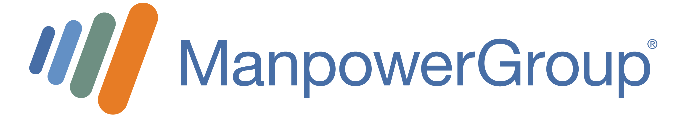

Organizaciones y entidades que confían en nuestros servicios de evaluación psicométrica y desarrollo organizacional
Colaboración integral en múltiples procesos de selección y evaluación para la administración municipal, incluyendo concursos internos, evaluaciones de competencias y asesoría en gestión del talento humano.

Alianza estratégica para el desarrollo integral de soluciones de evaluación, incluyendo diseño de pruebas psicométricas, bancos de preguntas especializadas y consultoría en procesos de selección masiva para múltiples industrias.
Asociación estratégica para el desarrollo de instrumentos de evaluación integral en el sector judicial, incluyendo pruebas de conocimientos, competencias y psicotécnicas para diversos cargos y niveles de la Rama Judicial.
Colaboración en iniciativas de bienestar corporativo y evaluación del capital humano, incluyendo instrumentos de evaluación multifactorial, análisis psicométrico y consultoría en programas de desarrollo organizacional.
Alianza estratégica para el desarrollo de instrumentos de evaluación especializados en el sector público, incluyendo validación de competencias, diseño de bancos de preguntas de conocimientos específicos y consultoría en procesos de selección para cargos de alta responsabilidad.
Únete a las organizaciones que ya confían en nuestros servicios para transformar sus procesos de gestión humana
Solicitar Propuesta